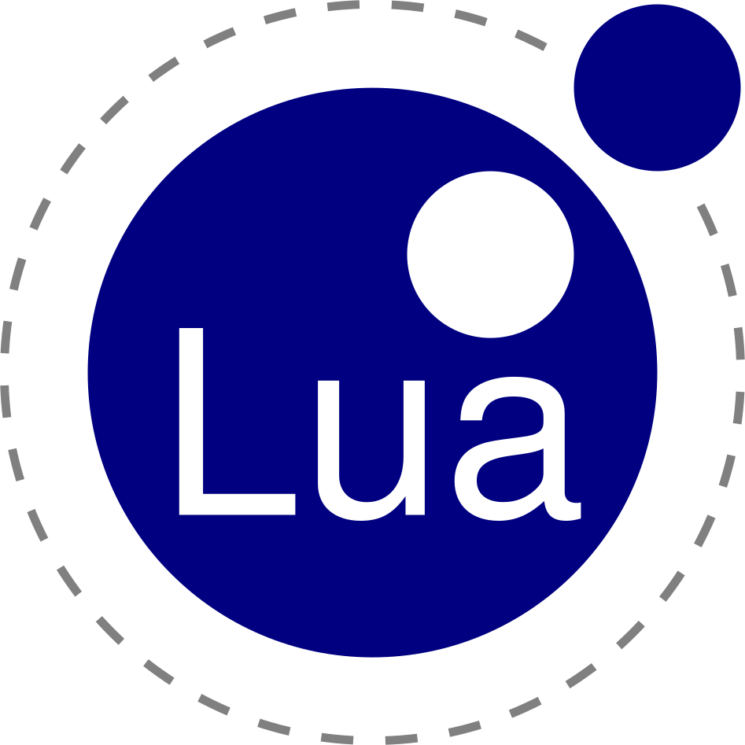

Spinnenheld – Angst overwinnen in een VR-wereld
In het kort
Van spinnenfobie naar Spinnenheld: hoe doe je dat in VR?
Voor dit project ontwierp ik in een duo Spinnenheld: een VR-experience die kinderen stap voor stap laat wennen aan spinnen. Door storytelling te combineren met exposure therapy, veranderen we de angst in zelfvertrouwen en controle.
Tools




Het probleem
Veel kinderen zijn bang voor spinnen, wat vaak komt door negatieve verhalen of onbekendheid. Gewoon uitleggen dat een spin ongevaarlijk is, werkt meestal niet. De uitdaging was daarom om een veilige omgeving te ontwerpen waarin een kind zelf de leiding neemt en op een speelse manier de confrontatie durft aan te gaan.

Mijn aanpak
Ik was verantwoordelijk voor het onderzoek naar gedragspsychologie en de conceptontwikkeling, waarbij mijn focus lag op de visuele stijl, het storyboard en het uitwerken van de interacties in de scripttaal Lua.
Stapsgewijze blootstelling
Uit mijn onderzoek naar exposure therapy bleek dat angst pas echt afneemt als je de drempel heel laag houdt. Daarom hebben we een VR-ervaring ontworpen waarin het kind zelf de controle heeft. Door dit te combineren met mijn vrolijke moodboard, sluit de hele omgeving aan op de belevingswereld van het kind en voelt het direct veilig.

Interactie ontwerpen
In Figma heb ik de hele dialoog en de flowchart uitgewerkt. Het was mijn doel om de spin niet zomaar als een object te zien, maar echt als een karakter waar het kind een band mee opbouwt. Daarna heb ik de flowchart vertaald naar een storyboard met verschillende versies. Hierdoor kreeg ik een goed beeld van hoe het verhaal liep en zag ik precies waar ik nog dingen moest aanpassen.


Bouwen in Roblox
Ik heb het prototype zelf gebouwd in Roblox Studio. Omdat ik Lua nog niet kende, heb ik ChatGPT gebruikt om de scripts voor de interacties te schrijven. Hierdoor voelt de ervaring voor het kind heel echt aan, omdat de spin nu direct op hun gedrag reageert.

De oplossing
Van schrik naar vriendschap: de experience is opgebouwd als een verhaal waarbij de spin steeds een klein beetje echter wordt.

1. Controle en veiligheid
De ervaring begint in een vrolijke, kleurrijke ruimte die helemaal niet eng aanvoelt, omdat we het kind eerst wouden laten wennen aan de omgeving. Door de spin eerst klein en vriendelijk voor te stellen, krijgt het kind een gevoel van controle voordat de echte interactie begint.


Omgeving Spinnenheld
2. Interactieve storytelling
Naarmate de experience verder gaat, wordt de spin realistischer, maar de band die het kind heeft opgebouwd zorgt ervoor dat de angst afneemt. In plaats van alleen te kijken, moet het kind de spin uiteindelijk ook echt gaan helpen. Door een echte spinnenheld te worden, krijgen ze meer zelfvertrouwen. Door directe feedback te geven op elke interactie, voelt de VR-wereld echt en betrouwbaar aan.
Resultaat & reflectie
Het resultaat is een laagdrempelige game die als middel dient om emoties en gedrag te beïnvloeden. Voor de doelgroep voelt het als een spel, terwijl ze onbewust hun grenzen verleggen.
Wat ik heb geleerd
- Kinderen helpen met VR: Ik heb gezien dat je met VR een plek kunt maken waar iemand zich veilig voelt. Als je het stap voor stap opbouwt, help je iemand over een drempel heen zonder dat het eng wordt.
- Gebruikmaken van tools: Ik heb het prototype zelf gebouwd in Roblox Studio. Omdat ik de taal Lua niet ken, heb ik ChatGPT gebruikt om de scripts voor de interacties te schrijven. Ik heb ChatGPT precies aangestuurd met wat de spin moest doen en die code vervolgens in de game geplaatst. Hierdoor kon ik ondanks deze beperking toch een werkend product neerzetten waar de focus ligt op de ervaring van het kind.
- Leren door te doen: Het was superleuk om zelf iets in VR te bouwen, maar ik heb vooral geleerd hoe belangrijk iteraties, prototyping en vroeg testen zijn. We konden de VR-brillen pas laat lenen, waardoor we er op het laatste moment achter kwamen dat de ervaring in de bril heel anders is dan op een scherm. Een goede les voor de volgende keer: zo snel mogelijk alles regelen en vaker testen.
In het proces heb ik geleerd hoe belangrijk een goede persona, heldere ontwerpvoorwaarden en concrete UX-principes zijn om een ervaring te maken die echt werkt voor kinderen.